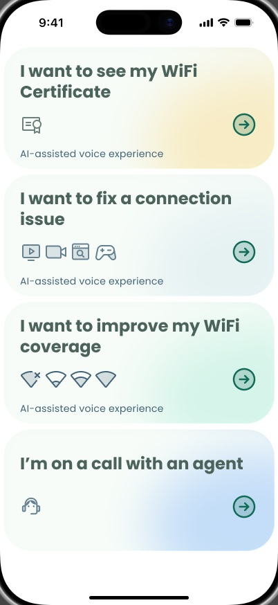
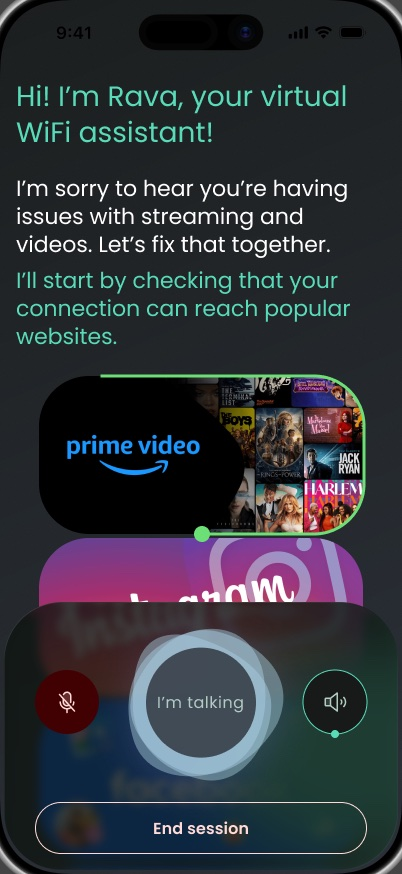

01RouteThis · 2022–2026


Rava: turning a WiFi support app into an AI voice agent
Support calls resolved without a human agent
How I led design on the team that made fixing your own internet a better option than calling your provider, and what happens when the AI can’t fix it.
Case study 01